Небесные события на 2027 год
В каждом месяце есть главное событие (выделено в календаре значком ★) и несколько дополнительных явлений.
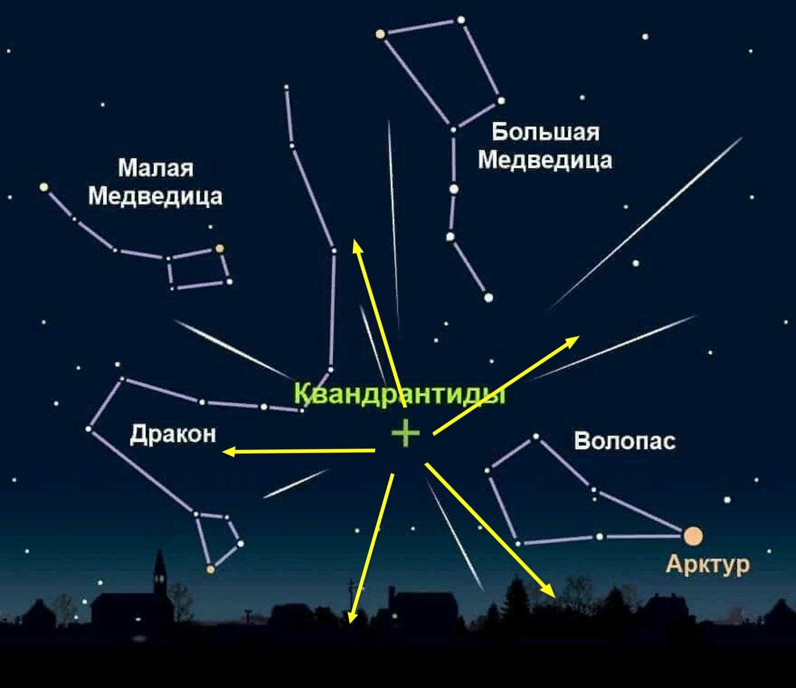
📅 Январь 2027
Главное событие: Квадрантиды (звездопад)
✨ 3 января — Квадрантиды (до 120 метеоров в час)
Инструкция: Пик очень короткий — всего 4–6 часов, лучшее время с 2 до 6 утра. Радиант в созвездии Волопаса (рядом с Большой Медведицей). Смотреть на северо-восток. Метеоры яркие и быстрые. Одевайтесь очень тепло — это самый холодный звездопад в году.
⭐ Редкость: ежегодный, но пик короткий.
📌 Другие события января:
- 2 января — Земля в перигелии.
- 8 января — Соединение Луны и Марса.
- 20 января — Соединение Венеры и Сатурна.
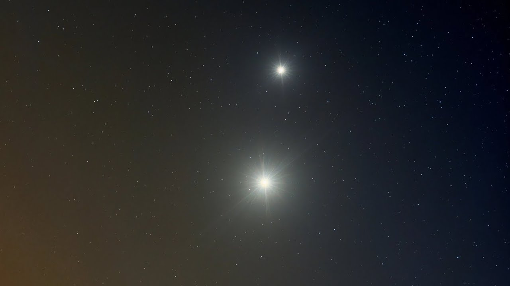
📅 Февраль 2027
Главное событие: Соединение Венеры и Юпитера
🔭 20 февраля — Венера и Юпитер рядом (расстояние 0.5°)
Инструкция: Сразу после заката смотреть на запад. Две ярчайшие «звезды» почти сливаются в одну точку! В бинокль видно серп Венеры и четыре галилеевых спутника Юпитера. В следующий раз такое тесное соединение будет только через несколько лет.
⭐ Редкость: раз в 2-3 года.
📌 Другие события февраля:
- 1 февраля — Соединение Луны и Венеры.
- 6 февраля — Соединение Луны и Марса.
- 24 февраля — Меркурий в утренней элонгации.
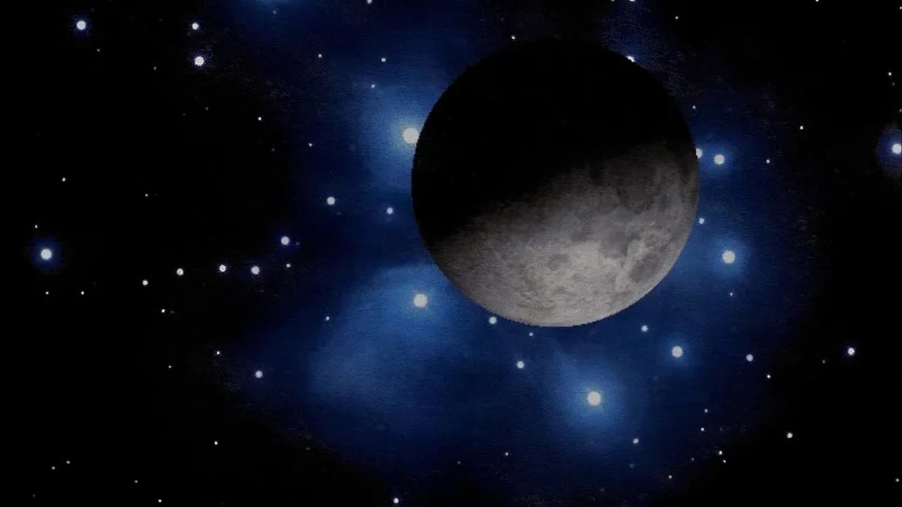
📅 Март 2027
Главное событие: Соединение Луны и Плеяд
🌟 14 марта — Луна проходит на фоне звёздного скопления Плеяды
Инструкция: Смотреть после заката на запад. В бинокль отлично видно, как Луна закрывает яркие звёзды скопления Плеяды (M45) — одно из красивейших покрытий года. Скопление видно невооружённым глазом как крошечный ковшик.
⭐ Редкость: несколько раз в год, но конкретно это покрытие — красивое.
📌 Другие события марта:
- 3 марта — Полное лунное затмение.
- 20 марта — Весеннее равноденствие.
- 29 марта — Частное солнечное затмение.
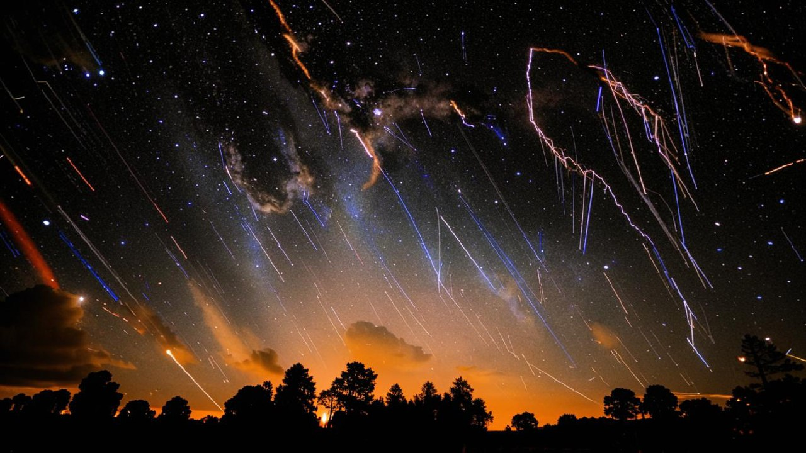
📅 Апрель 2027
Главное событие: Лириды (звездопад)
☄️ 22 апреля — Лириды (до 20 метеоров в час)
Инструкция: Смотреть после полуночи до рассвета, радиант в созвездии Лиры (яркая звезда Вега). Метеоры Лирид — одни из самых быстрых (49 км/с). Древнейший наблюдаемый звездопад — записи о нём есть с 687 года до н.э.
⭐ Редкость: ежегодный, древнейший из известных.
📌 Другие события апреля:
- 1 апреля — Соединение Марса и Сатурна.
- 9 апреля — Соединение Луны и Венеры.
- 19 апреля — Меркурий в вечерней элонгации.
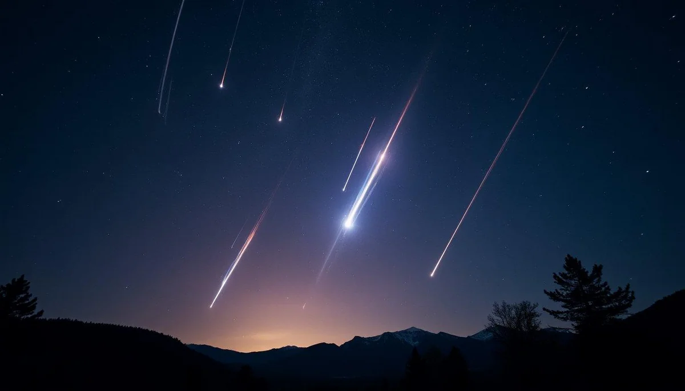
📅 Май 2027
Главное событие: Эта-Аквариды (звездопад)
🌊 5 мая — Эта-Аквариды (до 50 метеоров в час)
Инструкция: Смотреть с 3 до 5 утра на восток-юго-восток. Частицы кометы Галлея! Лучше виден из южных регионов России (Краснодарский край, Крым). Метеоры быстрые, часто оставляют светящиеся следы.
⭐ Редкость: ежегодный, частицы кометы Галлея.
📌 Другие события мая:
- 15 мая — Серебристые облака — первые в сезоне.
- 17 мая — Соединение Луны и Сатурна.
- 25 мая — Соединение Венеры и Юпитера (утро).
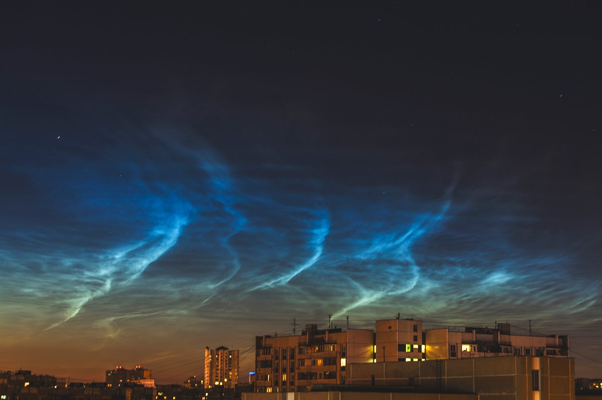
📅 Июнь 2027
Главное событие: Серебристые облака (пик сезона)
✨ Весь июнь — максимум серебристых облаков
Инструкция: Смотреть на северный горизонт через 30-60 минут после заката (примерно с 23:00 до 01:00). Серебристые облака — самые высокие в атмосфере (75–90 км), они подсвечиваются Солнцем, когда земля уже в темноте. Выглядят как голубоватые светящиеся нити. Лучше всего выезжать за город.
⭐ Редкость: только летние месяцы, яркие сезоны раз в 5-7 лет.
📌 Другие события июня:
- 5 июня — Серебристые облака — активная фаза.
- 14 июня — Соединение Луны и Венеры.
- 21 июня — Летнее солнцестояние.
- 26 июня — Соединение Луны и Юпитера.
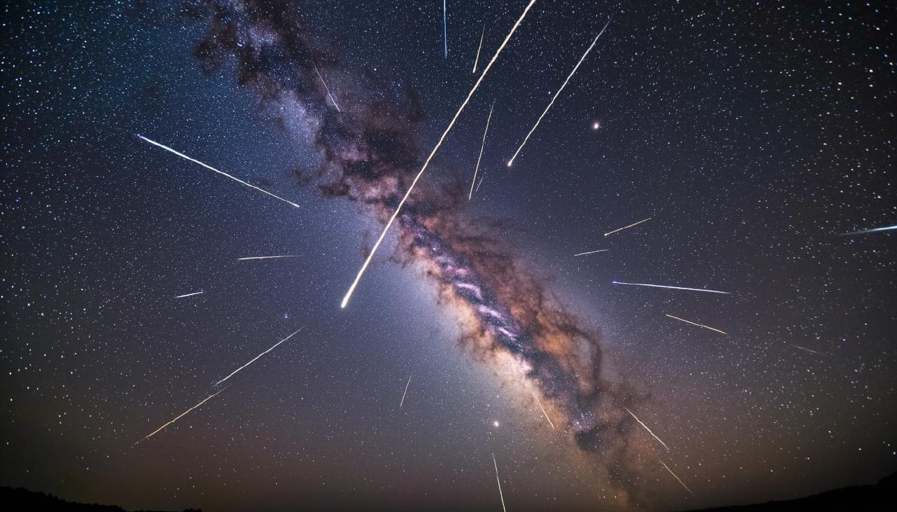
📅 Июль 2027
Главное событие: Южные дельта-Аквариды
💫 28 июля — Дельта-Аквариды (до 25 метеоров/час)
Инструкция: Смотреть после полуночи до рассвета, радиант в созвездии Водолея (южная часть неба). Лучшая видимость — из южных регионов России, где созвездие поднимается высоко. Метеоры не очень яркие, зато их много.
⭐ Редкость: ежегодный, лучше виден с юга.
📌 Другие события июля:
- 4 июля — Земля в афелии.
- 10 июля — Серебристые облака — затухание сезона.
- 18 июля — Соединение Луны и Сатурна.
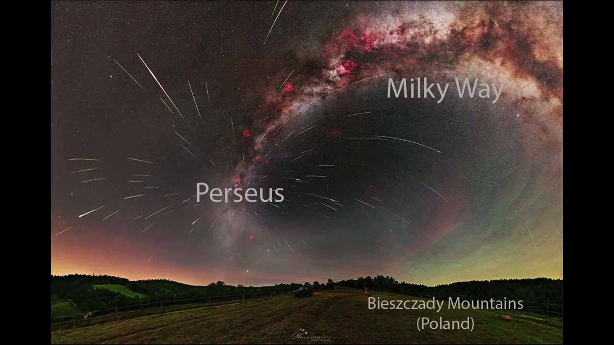
📅 Август 2027
Главное событие: Персеиды (звездопад)
⭐ 12-13 августа — Персеиды (до 100 метеоров в час)
Инструкция: Смотреть с 22:00 до рассвета, радиант в созвездии Персея (северо-восток). Самый популярный и надёжный звездопад года. Августовские ночи тёплые — берите плед, коврик, средство от комаров. Лучшая позиция — лёжа на спине.
⭐ Редкость: ежегодный, самый массовый и удобный для наблюдения.
📌 Другие события августа:
- 1 августа — Соединение Марса и Луны.
- 10 августа — Меркурий в утренней элонгации.
- 17 августа — Соединение Луны и Юпитера.
- 28 августа — Противостояние Нептуна.
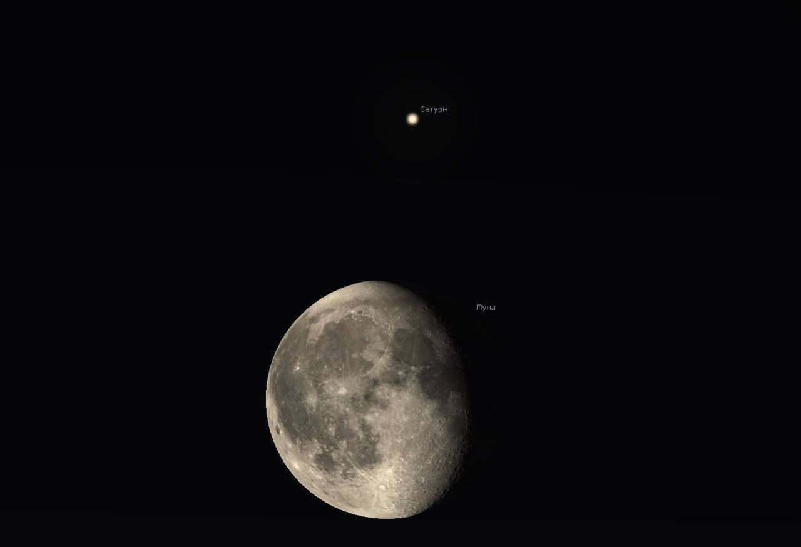
📅 Сентябрь 2027
Главное событие: Соединение Луны и Сатурна
🔭 7 сентября — Луна и Сатурн рядом
Инструкция: Смотреть после заката на юг. В бинокль рядом с Луной виден Сатурн с кольцами — один из красивейших объектов для наблюдения. Даже в небольшой телескоп можно разглядеть кольца. Луна будет яркой, Сатурн — золотистой «звездой».
⭐ Редкость: несколько раз в год, но всегда красиво.
📌 Другие события сентября:
- 1 сентября — Меркурий в вечерней элонгации.
- 12 сентября — Покрытие Плеяд Луной.
- 20 сентября — Серебристые облака — последние в сезоне.
- 23 сентября — Осеннее равноденствие.
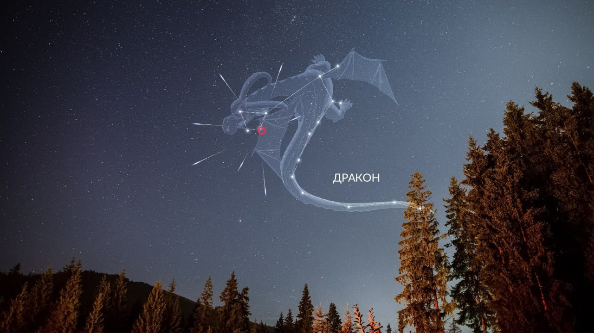
📅 Октябрь 2027
Главное событие: Дракониды (звездопад)
🐉 13 октября — Дракониды (возможна вспышка)
Инструкция: Смотреть после заката (редкий звездопад, активный вечером, а не под утро). Радиант в созвездии Дракона — высоко в зените. Метеоры медленные, красноватые. Обычно дают 10 метеоров/час, но в годы вспышек — до 1000. 2027 год — возможна повышенная активность.
⭐ Редкость: ежегодный, но вспышки раз в 10-20 лет.
📌 Другие события октября:
- 6 октября — Соединение Луны и Сатурна.
- 21 октября — Ориониды (до 20 метеоров/час).
- 26 октября — Меркурий в вечерней элонгации.
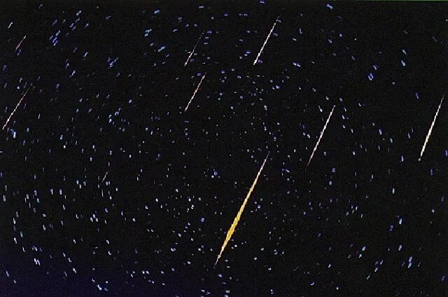
📅 Ноябрь 2027
Главное событие: Леониды (звездопад)
🦁 18 ноября — Леониды (до 15 метеоров/час)
Инструкция: Смотреть после 2 часов ночи до рассвета, радиант в созвездии Льва (восток). Метеоры очень быстрые (71 км/с) — одни из самых быстрых. Раз в 33 года дают шторм до 1000 метеоров/час, но 2027 год — не штормовой (следующий шторм ~2031–2032).
⭐ Редкость: ежегодный, известен историческими штормами.
📌 Другие события ноября:
- 5 ноября — Соединение Луны и Венеры.
- 9 ноября — Тауриды (огненные шары).
- 12 ноября — Противостояние Урана.
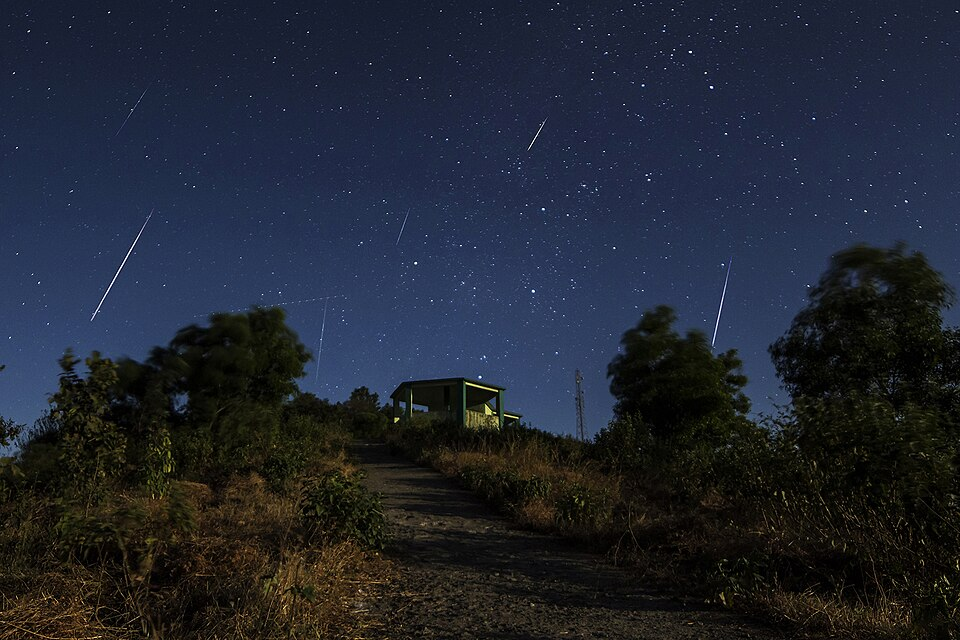
📅 Декабрь 2027
Главное событие: Геминиды (звездопад)
❄️ 14 декабря — Геминиды (до 150 метеоров в час)
Инструкция: Смотреть с 22:00 до рассвета, радиант в созвездии Близнецов (высоко на востоке). Метеоры яркие, медленные, часто разноцветные — белые, жёлтые, голубые, зелёные. Это самый мощный звездопад года — больше, чем Персеиды! Одевайтесь максимально тепло, берите термос с чаем и коврик.
⭐ Редкость: ежегодный, самый обильный звездопад.
📌 Другие события декабря:
- 1 декабря — Соединение Луны и Юпитера.
- 10 декабря — Соединение Венеры и Луны.
- 21 декабря — Зимнее солнцестояние.
- 28 декабря — Меркурий в вечерней элонгации.
✨ Совет: за 20 минут до наблюдения выключите яркий свет и не смотрите в телефон — глаза привыкнут к темноте, и вы увидите в 2 раза больше метеоров.